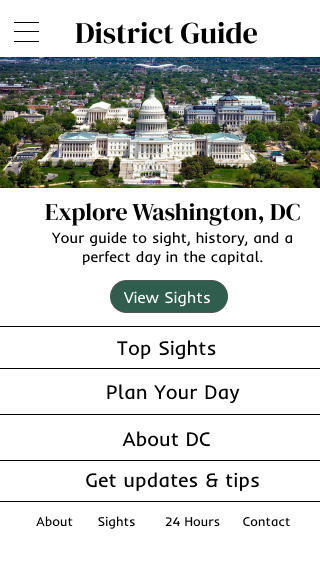

p2.3: First iteration of mobile designs
District Guide — four mobile mockups (320 px).

Page 1
Home
— landing with hero, highlights, and CTAs.
Page 2
About
— brief history, transit tips, and free must-dos.
Page 3
Top Sights
— landmark cards with one-line blurbs.
Page 4
24 Hours
— flexible one-day itinerary with food options.
 Page 3Top Sights — landmark cards with one-line blurbs.
Page 3Top Sights — landmark cards with one-line blurbs.
 Page 424 Hours — flexible one-day itinerary with food options.
Page 424 Hours — flexible one-day itinerary with food options.